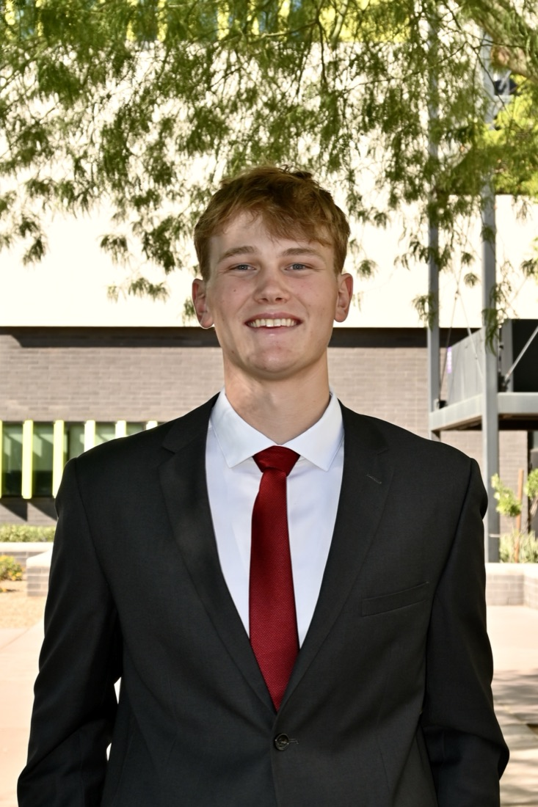
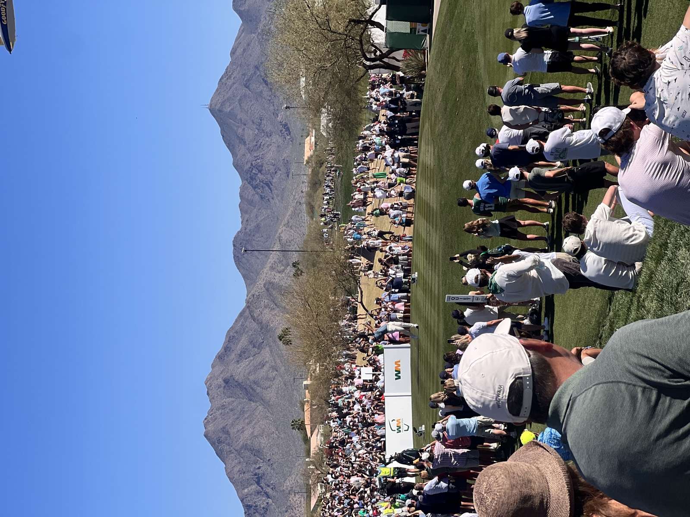

GCU Investment Banking Club, founding member ·
Student-Managed Investment Fund, energy sector head
Targeting
Investment banking analyst, Summer 2028, with a long-term focus on investing

About
I'm an economics student at NYU's College of Arts & Science, graduating in
January 2029. I grew up between Walnut Creek, California and Fort Collins,
Colorado, and I'm now based in New York.
I started college at Grand Canyon University as a finance major with an
accounting minor, earning a 3.86 GPA. There I was a founding member of the
investment banking club and led the energy sector of a roughly $5M
student-managed investment fund. I transferred to NYU this fall to be closer to
the industry and the people in it.
My experience started in accounting, with internships at Flood & Peterson
and Even/Odd. I then spent a semester as a spring analyst at The Peakstone Group
in Chicago, working across a variety of deal types. For the summer I joined Clarke
Advisors, which works entirely in supply chain and logistics, drawn by its
reputation for giving analysts more hands-on responsibility in live deals.
I'm recruiting for Summer 2028 investment banking analyst roles. Long term, I
want to run or build a business, and I see banking as the fastest way to learn how
companies are valued, financed, and sold.
Supply chain and logistics M&A in the lower middle market. Most of my work was drafting teasers and CIMs for new engagements, then keeping those materials and the underlying valuation models current as new information came in or the framing of a deal needed to change.
A large part of the role was screening prospective clients. I would receive the data room for a new company and be asked for my view. I always started from the perspective of a potential buyer: what would someone paying for this business want to see, and what would make them walk away? From there I researched the business, tested management's claims against public information and comparable deals the firm had done, and reported back. My assessments were taken seriously.
Nov 2025 – May 2026ChicagoMiddle-market M&A
Investment Banking Spring Analyst — Peakstone Group
Middle-market investment banking across a variety of deal types, reporting directly to a managing director. My largest engagement was a Series A raise for a pre-revenue hardware company. I drafted the teaser, built and scored the investor target list by fit, and helped draft investor outreach. I also supported research on other mandates, including storage capacity analysis for a petroleum terminal sale.
The most important work on that raise was diligence. I audited the company's financial model and marketing materials against primary sources. Several headline claims did not hold up, including the size of the addressable market and the safety statistics behind the pitch.
Jun – Nov 2025San FranciscoFinance & accounting operations
Accounting Intern — Even/Odd
A close look at how a business runs from the inside. I supported quarterly sales and production reporting and budget audits, which showed me how the numbers in a financial statement actually get made and how operating decisions show up in them.
Apr – Aug 2025Greeley, ColoradoInsurance brokerage
Accounting Intern — Flood & Peterson
Handled weekly accounts receivable, reconciled payment logs, and helped prepare the monthly internal financial statements.
02
Leadership & involvement
Nov 2024 – May 2026Sector head, energy
Energy Sector Head — Student-Managed Investment Fund, Grand Canyon University
I led energy coverage for a student-managed fund with roughly $5M under management. The work was modeling companies in the sector, identifying names we thought were mispriced, and presenting buy and sell recommendations to the investment committee.
My main pitch was Tidewater, the offshore vessel operator. I built the financial model behind it and presented the recommendation to the committee.
Apr 2025 – May 2026Founding member
Founding Member — Investment Banking Club, Grand Canyon University
I helped found GCU's Investment Banking Club, built around weekly technical workshops led by upperclassmen with full-time banking experience. Through the club I built an LBO model and delivered a mock pitch on a simulated company, and worked through structured sessions on networking and interview prep.
2022 – 2024Fort Collins
Special Olympics
Two years volunteering at the annual event, working one-on-one with athletes to support and encourage them through competition.
03
Interests
Python, RustPersonal project
Learning to build with code and AI
I've gotten into coding largely through AI tools. They let me go from an idea to working software much faster than I expected, and the more I built, the more I wanted to understand how the pieces actually fit together.
The project I've used to learn is Soren. Kalshi and Polymarket often list contracts on the same event, and because each runs its own order book, the same outcome can trade at two different prices. Soren matches contracts across both platforms and flags price gaps wide enough to survive fees. Building it meant learning to work with live market data from two very different APIs.
Golf and football
I'm an avid golfer. I played in high school and worked at a pro shop my senior year. Before that I played defensive end and tight end on the varsity football team, and I'm still a 49ers fan.

Outdoors
Growing up in Colorado meant a lot of time outside, mostly hiking, along with snowboarding, rock climbing, and trips to national parks. When I can, I'm out on the water boating.